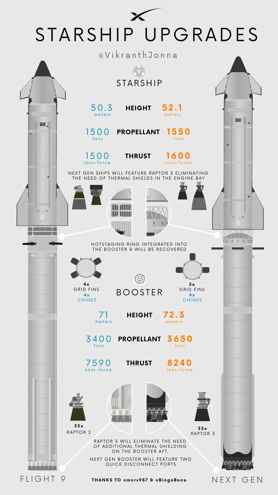
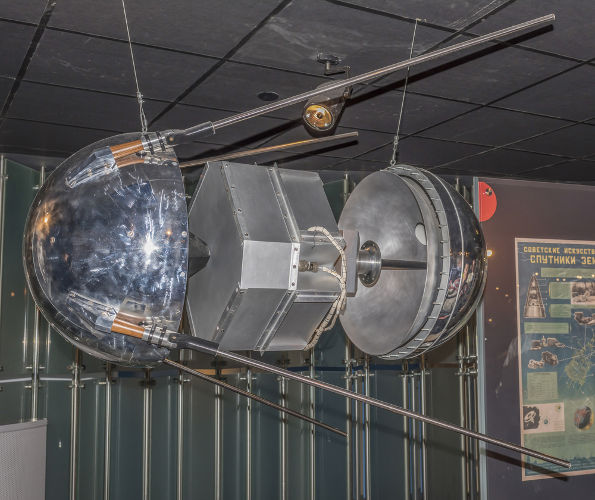

Meu primeiro post
Por:Rafael Kutz
Boas-vindas ao meu novo blog! Aqui vou compartilhar dicas de programação e curiosidades da área de tecnologia.
Vou compartilhar conhecimentos sobre tecnologia e programação!
Por:Rafael Kutz
Boas-vindas ao meu novo blog! Aqui vou compartilhar dicas de programação e curiosidades da área de tecnologia.

Por: Rafael Kutz/p>
Lançado em 1972, o Magnavox Odyssey foi o primeiro console de videogame doméstico do mundo, abrindo caminho para a indústria dos games como a conhecemos hoje..
Fonte:https://www.bbc.com/portuguese/articles/c3gyw77e6eko

Por: Rafael Kutz
Ela foi criada em 2025 para a missão Starship Flight.
Fonte:wikipedia.org/wiki/SpaceX_Starship

Por: Rafael Kutz
O Sputnik 1 foi criado por uma equipe de cientistas e engenheiros soviéticos liderada por Sergei Korolev, o engenheiro-chefe do programa espacial da União Soviética.
Fonte:research-starters/history/sputnik-i

Por: Thaiz Antiszko
O primeiro site foi criado por Tim Berners-Lee em 1991 para explicar o funcionamento da World Wide Web.
Fonte:Primeiro site da Web

Por: Thaiz Antiszko
Apesar dos alertas de segurança, milhões de pessoas continuam utilizando senhas extremamente fáceis de descobrir.
Fonte:NordPass – Most Common Passwords

Por: Thaiz Antiszko
Sem as correções previstas pela Teoria da Relatividade, os sistemas de GPS acumulavam erros de localização de vários quilômetros por dia.
Fonte:NASA – Relativity and GPS